iOS vs. Android UI Design: The Main Differences
iOS vs. Android Navigation
Top-of-screen navigation
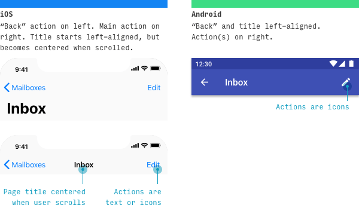
- iOS, the left action is some sort of “back” – whether to the previous screen sequentially or the parent screen hierarchically. The page title is virtually always present. Optional right page action(s) can be displayed as a single text action or multiple icon actions
- Android, there doesn’t need to be anything to the left of the page title, but (a) if the page is a top-level page and there’s a hamburger button in the app, it appears there, or (b) if this page follows another sequentially, you can optionally add a back button
- Resources: iOS navigation bars; Material Design top app bar
Primary Navigation Destinations
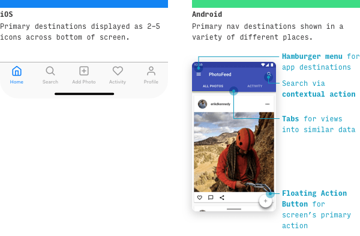
iOS, primary destinations in the app are listed as tabs across the bottom.
- There are 2-5 tabs total
- They represent the main destinations or “nouns” of the application
Many popular third-party iOS apps also conform to a few additional guidelines:
- Any tab that represents the primary action of the app – for instance, adding a new photo in a photo-based app – is centered
- Any profile- or settings-related tab appears last
- Search appears second
iOS default apps, on the other hand, (1) discourage actions being in the tab bar, (2) don’t have profile- or settings-related tabs, and (3) make search appear last.
- The biggest difference on Android is that the same primary destinations are more spread out throughout the interface – often between (a) a hamburger button, (b) a search bar, (c) tabs, or (d) a floating action button. Note: Android does use bottom navigation more recently.
- Resources: iOS tab bars; Material Design understanding navigation
Secondary Navigation Destinations
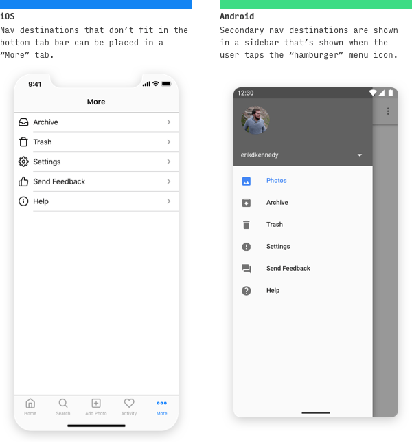
- iOS, navigation destinations that can’t fit in the bottom tab bar can (a) be shunted into a catch-all “More” tab or (b) appear as actions in the top-left or top-right of other destinations.
- Android, secondary nav destinations are listed in a side menu accessible by pressing a hamburger button.
- Note: while Apple doesn’t specifically encourage use of the hamburger button (or use it in their default apps), a lot of third-party iOS apps do have one
- Resources: Material Design nav drawer
Navigation Takeaways
- Bottom of screen - both use this and it is a safe option for placing universal primary navigation
- "Hamburger"/"More" probably provides the best mix of consistancy & scaleability, while leaving space at the top for other components
- Tabs - below the context these provide the means to show Parent and Children at any level of the information hierarchy
- Search - probably want to place a scoped search near the lists (hence below the context & tabs). A more universal one needs to be positioned at the top of the hierarchy. The 2nd spot on the footer menu may be best position as a universal default
- Floating action - this seems very particular to Material design, as a first pass we should probably start with a pattern closer to desktop model
“Back” Pattern on iOS vs. Android
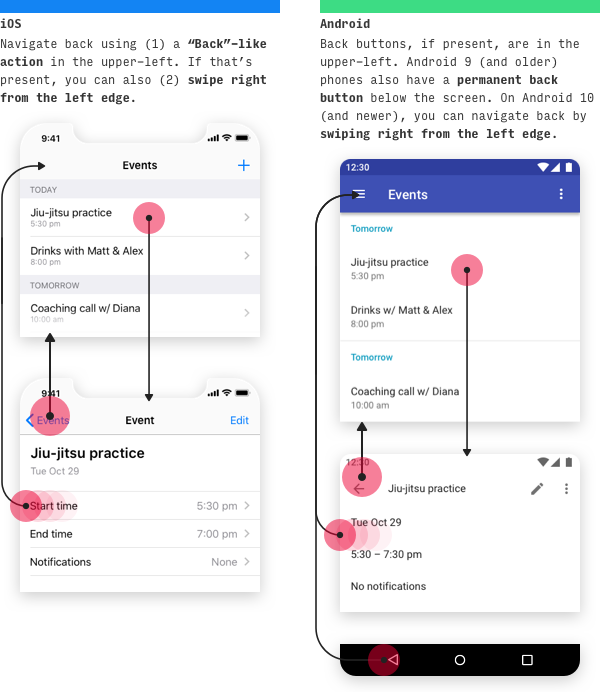
On iOS, you can navigate backwards in 4 different ways, depending on the context.
- Press “Back” action on top-left of screen - Any screen on which a “Back" action appears
- Swipe right from left edge of screen - Any screen on which a “Back” action appears in the upper-left
- Press “Done” action on top-right of screen - Non-editing modal views
- Swipe down on screen content - Modal or fullscreen views
Modal and fullscreen views
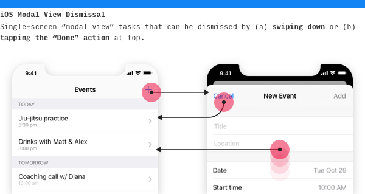
- Modal views can be dismissed by swiping down or tapping a “Back” action at the top.
- Fullscreen views are media like photos or videos that take up the entire screen. They’re dismissed by swiping down on both iOS and Android.
iOS vs. Android Control Design
Primary call-to-action buttons
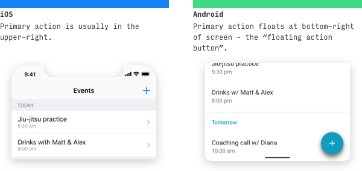
- On iOS, the page’s primary button will usually be on the upper-right.
- On Android, however, the page’s primary button will often appear in the bottom-right as a floating action button, or FAB for short.
- It’s worth noting that each platform will still have exceptions. Let’s take a look.
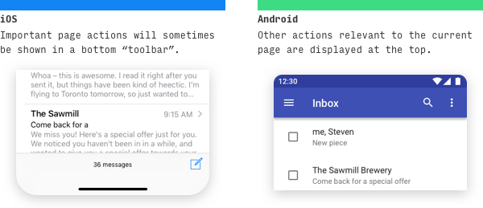
- Occasionally on iOS, important page actions will appear on a bottom toolbar. Apple likes to stress this is reeeeally different from a tab bar, but come on now.
- Likewise, occasionally on Android, important actions will appear at the top of the screen.
- Resources: iOS buttons; Material Design floating action button
Primary call-to-action Takeways
- We need to prioritise Create, Read, Update, Delete
- Read is navigation problem
- Update is the primary action from read
- Should probably be placed to right top side which seems more transferable outside of a full embracement of Material Design flot action
- Delete must only be available in context > tab > table > select
- Create is the primary on the list view.
- Is Create (child) a pairing with Update (parent) depending on the tab chosen and if the tabs can scroll is that an issue? Possibly not if the active tab is prioritised to keep in view.
- This suggests that the tabs need to locked to the header so the action is in proximity with the context tab.
- In a scrolling tab - if last place just inside right otherwise just inside left
Primary call-to-action Takeways 2
- Google and Apple both use tabs
- Google and Apple both place primary actions elsewhere
Search
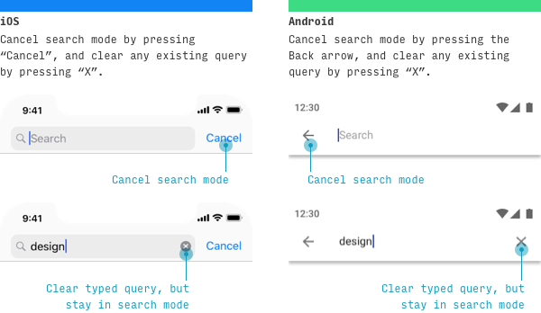
iOS vs Android search UI differences;
- To cancel the search, press “Cancel” on iOS or “←” on Android
- To clear the current query, but remain on the search screen, press “X” on iOS or “X” on Android
Search 3
Tapping the search bar will bring up a totally separate screen, when search isn’t as critical or common, you can access it via other places.
- iOS vs Android search access UI differences
- On iOS, it’s common to see search as one of the tabs in the primary tabs, or an action in the top nav bar.
- On Android, you’ll also see it in the contextual actions on the top bar as well.
- Resources: iOS search bars; Material Design search pattern
iOS & Android Action Menus 2
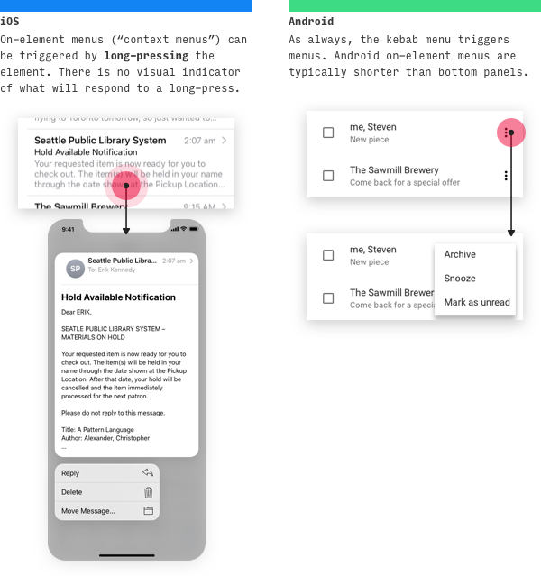
iOS & Android Action Menus 3
- A newer (iOS 13) iOS feature called “context menus” shows related actions when you tap and hold an element. When the context menu is shown, the background is blurred out.
- And on Android, many menus will appear in-place directly on the element. In newer versions of Android, the menu will cover the kebab icon itself.
- Resources: iOS action sheets, context menus; Android menus, bottom sheets
Action Menus Takeaways
- 3 dot "kebab menus" need to be supported
- These might be an option for Primary actions lets try to keep them on the list views
- iOS need to be explored better to see if we should have a place for them
Selection controls
On mobile, it’s smart to handle choices among few options differently from choices among many options.
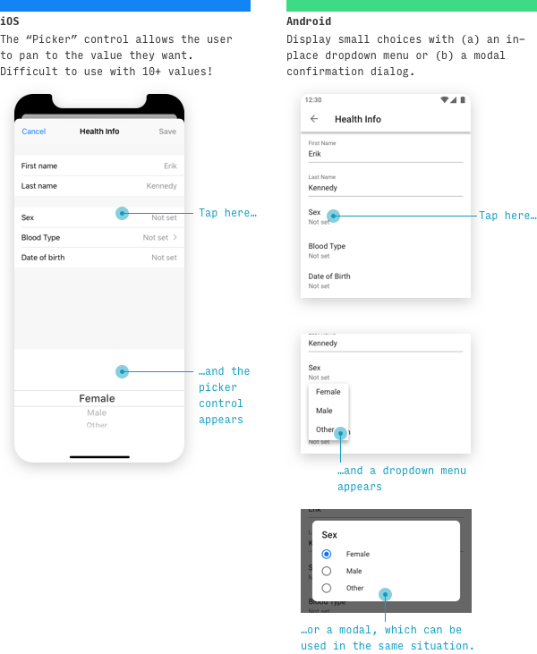
- For choices among relatively few options, use a picker control on iOS. Pickers can appear anchored at the bottom (shown above), or inline with the content (see “Date Pickers” below for an example).
- For choices among few options on Android, it’s typical to use a dropdown menu (which appears in-place) or a modal dialog (which appears centered and darkens the app background) listing the options.
Selection controls 2
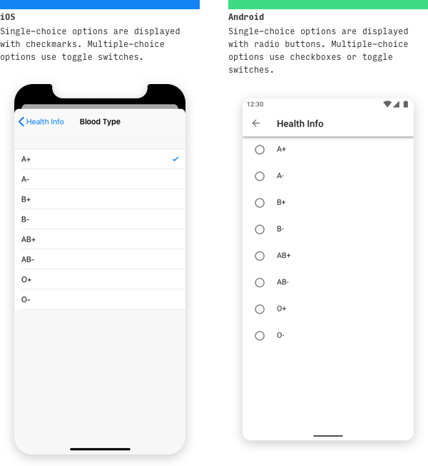
- For longer lists of options, or when multi-selection is possible, it’s common to see a dedicated “picker screen” on both iOS and Android. One of the biggest beginning designer mistakes in mobile design is not dedicating a full screen to the picking of a single choice with many options.
- Resources: iOS pickers; Android dropdown menus, dialogs
Selection controls Takeaways
- Android Patterns look closest to desktop and should define the default behavious - dropdowns, radio buttons, checkboxes
Date pickers on iOS vs. Android
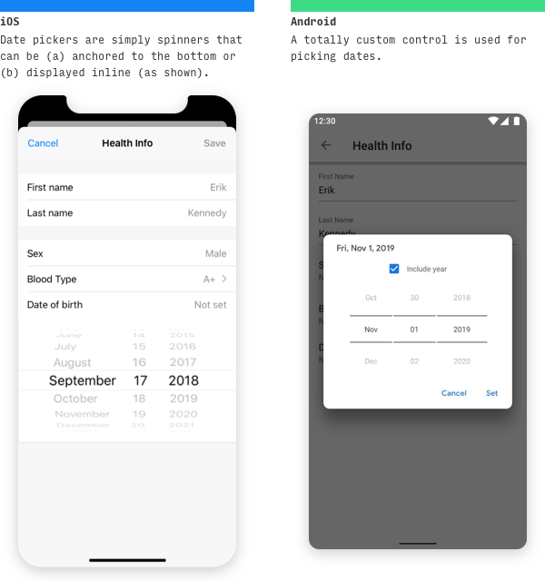
Date pickers on iOS vs. Android 2
- On iOS, date pickers take the appearance of any other picker control, but with a column for day, month, and optionally year.
- Android has its own custom date picker control. You can choose to include year, not include it, or allow the user to choose whether or not they want to include it.
- Resources: iOS picker; Android date picker (notice the differences in the Material Design spec)
Date pickers Takeaways
- Android Pattern look closest to desktop and should define the default behavious
iOS and Android Tabs
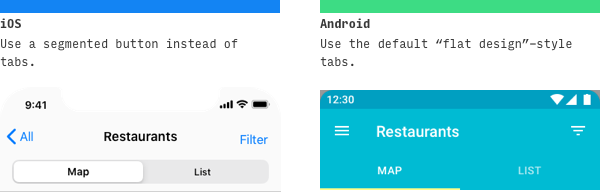
- It’s worth noting that iOS doesn’t have a control that visually resembles “tabs”. Instead, Apple calls for you to use a segmented button to navigate between sister views.
- On Android, a “flat design” style tab is used for the same display.
- Resources: iOS segmented controls; Material Design tabs
Tabs Takeaways
- This is possibly the most important Pattern to help us with a toolkit
- It needs to reconcile with the Patterns used on a desktop machine
- Android Pattern with a back botton on left, primary button as text and tabs scrollable if needed
“Undo” Pattern on iOS and Android
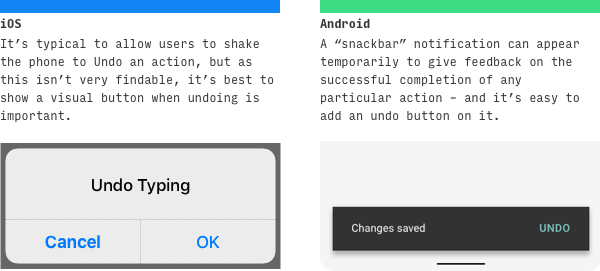
- On iOS, alerts appear in the center of the screen, but you’ll also see alerts slide up from the bottom of the screen (technically called “action panels” in iOS lingo). Destructive actions (like deleting something) are red.
- On Android, some alerts appear in the center of the screen. However, for alerts that don’t require user input and should disappear after a few seconds, you can use “snackbars”. Snackbars are fantastic, because (a) they give you a way to tell the user that their action was a success, and (b) you can add an action or two on them – which makes them the ideal place for “Undo”. And when it comes down to it, I’d rather give my users the option to undo a mistake then ask them twice every single time they try to make an important decision.
- Resources: iOS Undo; Material Design snackbars
"Undo" Takeaways
- iOS Pattern look closest to desktop with non trivial data and should define the default behavious
iOS - this is duplicating much of first set
iOS Nav Bar
The nav bar is where the app displays navigation, the page title, primary page actions, and – often – search.
You can think of the iOS nav bar as being comprised of up to three “rows”. Typically;
- First row: Page Actions
- Second row: Page Title
- Third row: Search (very optional)
iOS Nav Bar 2
Use a single row if you just need to compactly display some page actions (even the page title is optional).
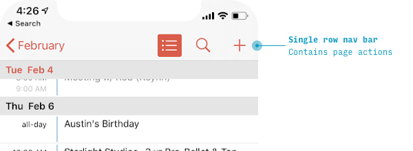
iOS Nav Bar 3
The default iOS app page layout contains two rows: one for page actions, and a second for a large page title.
But if you need to show search, then you need a third row (even if the first row is left blank!).
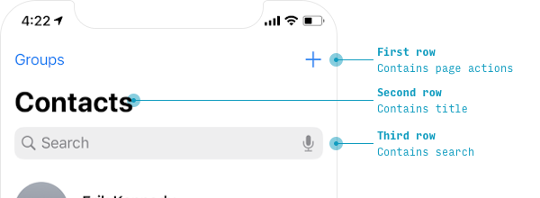
iOS Nav Bar 4
- As soon as the user starts scrolling, iOS specifies for some interesting behavior.
- If a search bar is important to see at all times, it merely moves up from the third row to the second row while the app is scrolled.
- If it’s less important, it will disappear entirely – only visible when the user is at the very top of the page.
- When iOS nav bar rows disappear upon scrolling, they will re-appear when the user scrolls back to the top.
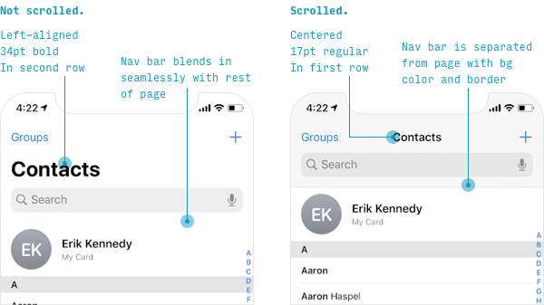
iOS Nav Bar 4
We can simplify out by stating that we should only ever entertain the 1st 2 rows as 1 and they always have a background colour.
Also the Title should always be stated
iOS Tab Bar
On iOS apps, primary destinations in the app are listed as tabs across the bottom.
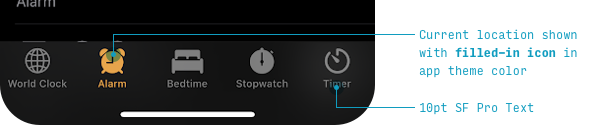
Let’s note a few things:
- The selected icon is denoted with the app theme fill color
- Different tabs remember their state.
- The tab bar is always visible within the app, except: ** When a keyboard is shown ** When a modal is open (during critical tasks, the user should focus on the task at hand rather than navigate to other parts of the app)
iOS Tab Bar 2
There should be 2-5 tabs in total. If you need to display more than 5, the fifth icons should be a “More” catch-all that shows other destinations on a quasi-picker screen when tapped.
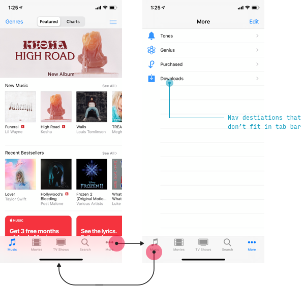
Navigating Back
On iOS, you can navigate backwards in 4 different ways, depending on the context. Swipe may not be appropriate as a pattern for multiple devices, so these may be more relevant;
- Tap “Back” action on top-left of screen - Any screen on which a “Back" action appears
- Tap “Cancel” or “Done” action on top of screen - Modal views
Also consider;
- Modals
- Table views
- Search
Reclaiming the screen v creating a Modal
In Asana the nav is kept til you get to Task (and then Sub Task) and then is dropped for a 'Task' menu.
In Google Chrome the app was showing a Navigation bar that dissappeared moving from U2 (Navigation bar + Context menu) to War (just Context menu), but I can no longer replicate this functionality and suggests I should have a persistant menu at the bottom (therefore a Tab bar), if I want to use Context menus at the top.
I need to re-visit Apple docs and the work done with this in mind.